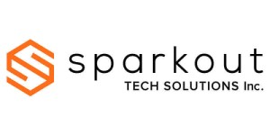
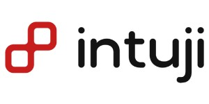
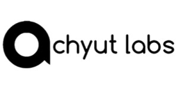
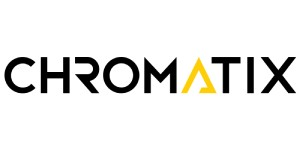
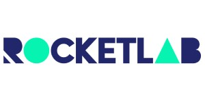
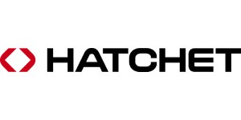
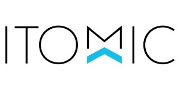
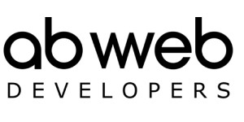

If you’re an Aussie founder looking for the best web development agencies in Australia to build your next project then our comprehensive list is exactly what you need to get started. Getting new web app ideas is an amazing feeling but when it comes to launching your app things can get a bit tricky. For that you either have to know how to code, hire someone to do it for you or hire an agency that specializes in web development.
For most businesses hiring an agency would make sense because finding talent and managing a development team takes time, money and most importantly experience. Even if you have a game changing idea, hiring from the best web development agencies in Australia will put you in a better position to make your project successful because you’re delegating your tech to experts. This will allow you to focus your attention on the business aspects of your project and acquiring new customers.
With that said, let’s see how our top 10 list looks like.
A Detailed Guide To The Top 10 Web Development Agencies in Australia For Product Development
Web development agencies are out there in plenty and it can be very confusing at times when you’re searching for a technology partner for your business. If you’re looking for web development agencies in Australia then chances are that you have already done your ground work and have decided that an agency is the right choice for you. However, even if you’re not there yet I will briefly explain why choosing an agency for your project may be the right choice for you.
When it comes to development you always need to make sure that the products you ship are scalable, secure and that they provide a great user experience. Many businesses choose to hire agencies because you need experts to handle a product development process. There are many high quality web development agencies in Australia and hiring an agency means that you can save time and money through an optimized and planned development process. You are essentially hiring a company to take care of the technology side for you while you focus on your business strategy.
With that said, let's see our lineup.
When it comes to choosing the right provider from the best web development agencies in Germany you have to compare their services with your project. Let’s see how each of them work.
1. Sparkout Tech Solutions Inc.

Sparkout Tech Solutions Inc is a highly regarded and established name in Australia for web development and technology consulting. It is a full service software development and digital transformation agency with a track record of over 7 years building and scaling scalable and secure products for the web.
Sparkout Tech is known for its keen focus on collaboration and working closely with its clients to make sure that the solution aligns deeply with the clients’ business goals and their target audience’s expectations. As one of the leading web development agencies in Australia Sparkout has a strong team of 100+ professionals who have deep expertise in building sustainable web applications for a host of different industries and use cases. You can find Sparkout’s clientele in industries like fintech, healthcare, logistics, governments, travel, education and manufacturing.
Sparkout Tech is also well known for being experts in emerging technologies like blockchain, AI/ML, IoT/DePIN and cloud solutions with a keen focus on merging innovation and great design. Additionally, Sparkout also offers multiple engagement models for projects like the Waterfall model and the Agile model for a seamless development process as one of the top web development agencies in Australia. Sparkout is a global service provider and works with businesses around the world with strong industry partnerships that can help you forge meaningful relationships within your space.
Pros:
- An established web development agency with high focus on building solutions using emerging technologies like blockchain, AI/ML, IoT/DePIN and cloud based solutions.
- A strong team of 100+ professionals with a proven track record building and scaling diverse solutions for businesses.
- A strong focus on collaborating closely with clients to make sure that their solutions align with your business needs and the goals of your customers.
- As one of the leading web development agencies in Australia Sparkout offers services for multiple industries from fintech to governments.
Cons:
- Because of the comprehensive nature of services and the focus on advanced technologies like blockchain and artificial intelligence the cost for development may be on the higher side for complex projects.
- If your project requires a deep level of consultation and because of the collaborative approach complex projects can take longer to develop.
Website: www.sparkouttech.com
2. Intuji

Intuji is a well known name in the Australian web development space and they are known for creating solutions that are innovative and yet tailored to meet the specific needs of their clients’ business. As one of the major web development agencies in Australia they specialize in building responsive web apps to help their clients solve customer problems better.
Another great thing about Intuji is that their focus is high on delivering web solutions that are intuitive, scalable and secure while at the same time giving a great user experience. Their focus is also high on building web app solutions that integrate seamlessly with a wide array of systems for business which improves your operational efficiency. Additionally, they also have expertise in different web development frameworks and technologies like React, Angular and Node.js.
Pros:
- As one of the leading web development agencies in Australia they specialize in providing you scalable and responsive web applications.
- They are well versed in modern web development technologies like React and Angular.
- Their focus on merging functionality with great user experience design is also very strong.
Cons:
- Because their services are comprehensive and the fact that they work with modern technologies their costs for development may be on the higher side.
- Their focus on advanced and emerging technologies like AI and IoT is limited so their services may not align with your needs if your requirements are in this space.
- As one of the top web development agencies in Australia their focus is primarily on building web apps so if you also need mobile app development for your project then you may have to collaborate with another service provider for those needs.
Website: www.intuji.com
3. Achyut Labs

Achyut Labs is a custom web development agency from Australia and is known for helping businesses of all sizes build scalable solutions. Their highlighting expertise in creating web app solutions that are sophisticated and cater to a wide range of industries. They are widely known for creating web applications that have high performance, scalability and security.
As one of the trusted web development agencies in Australia Achyut Labs’ expertise spans across multiple platforms and programming languages which means that they can help you build solutions that are tailored to your business goals. They are also known for their commitment for clients satisfaction when it comes to delivering projects on time and building within a set budget. One thing that sets them apart is that they have the ability to handle very complex projects while maintaining a good quality service in a competitive market.
Pros:
- They possess deep expertise in building highly scalable apps that are also high performing.
- As one of the leading web development agencies in Australia they have a strong commitment to delivering projects in a timely manner and within budget.
- They are very much experienced in building projects for a wide range of industries.
Cons:
- Their major area of focus is in building web applications so their services may be limited if you need mobile apps also for your project.
- Although they are known for timely delivery and staying within budget their costs may not align with you if you are a small business.
- Also a point to note is that more complex projects could take longer to develop depending on the scale of the project.
Website: www.achyutlabs.com.au
4. App Gurus
As one of the leading web development agencies in Australia App Gurus is well known for being a quality provider of web and mobile app development services. One thing to note is that App Gurus is more widely known for their capabilities of developing mobile applications but they also have deep expertise in building scalable web applications.
Another highlighting thing about App Gurus is that they give a lot of emphasis on building solutions that have a great user experience across multiple platforms and devices.
The apps they build are regarded as being highly responsive and user friendly. And as one of the top web development agencies in Australia they make sure that all of your users can have the same experience across all their devices. For this they put a lot of focus into the web design and using the latest web technologies to create superior products that have a great user experience as well as functionality.
Pros:
- They have a very strong focus on building web applications that are user friendly and highly responsive.
- Apart from a great web development service they are also capable of delivering high quality mobile applications.
- Since they use modern web design principles for building your web apps as one of the major web development agencies in Australia you can ensure that all your users get a frictionless user experience throughout all their devices.
Cons:
- Although their capabilities on web application and web development frameworks are very strong their focus is more on building mobile applications.
- Since they provide a specialized service with a strong emphasis on user experience their pricing may be on the higher side if you’re a smaller business.
- Since their focus is mostly outside of enterprise their services may not align with you if you have a highly complex project or an enterprise web app solution.
Website: www.appgurus.com.au
5. Chromatix

Chromatix is an award winning name in the web design space and one of the leading web development agencies in Australia. They have a great reputation for building websites and web applications that are visually stunning and highly interactive. One of their key focuses is one building digital experiences that engage your users and enhance the performance of your business.
They are well known for working very closely with their clients to deeply understand their business and delivering solutions for the web that are not only visually appealing but highly functional. One key point to note is that their solutions for the web are known for being highly optimized for performance, security and scalability. Additionally, as one of the leading web development agencies in Australia they provide other digital services like SEO, analytics and conversion rate optimization to help your business achieve measurable results.
Pros:
- Their expertise is very deep when it comes to creating websites that are visually stunning and user friendly.
- They have a very strong focus on other services apart from web apps and mobile apps like SEO, analytics and performance optimization.
- They are well known for building customized web applications that are highly secure and scalable.
Cons:
- Since they provide high end services their costs for development may be a barrier for you if you’re a smaller business.
- They are one of the leading web development agencies in Australia and their focus on building mobile applications may be lower which may not align with your needs if you also need mobile apps.
- They may not align with your requirements if you have web app ideas or work in an industry that requires complex technical capabilities.
Website: www.chromatix.com.au
6. Rocket lab

Rocket Lab, like their name, is well known for being a full service agency that can give you web development, mobile app development and digital marketing services under a single roof. They have a good reputation as one of the top web development agencies in Australia for providing their clients with web app solutions that are high quality and tailored to meet your specific business needs.
Rocket Lab has great expertise in taking your web app ideas and turning them into interactive and responsive web applications that drive high user engagement and business growth.
Additionally, they are known for taking the customer centric approach when they build web applications to make sure that they understand your goals and challenges properly. Having deep expertise in frontend and backend web development frameworks allows them to help you create well rounded solutions that work seamlessly as one of the top web development agencies in Australia.
Pros:
- Their speciality is in building web applications that are interactive and still secure at the same time.
- They have a highly customer centric approach when it comes to web development and ensure that their solutions align with your business goals.
- They have a strong emphasis on frontend and backend development for building your web apps.
Cons:
- Since they provide a specialized and expert service their costs for development may be on the higher side if you’re a smaller business.
- Since they are one of the most leading and trusted web development agencies in Australia their delivery timelines may be on the longer side.
- Their primary focus is on building web apps for their clients which may be limiting if you also need mobile app development services.
Website: www.rocketlab.com.au
7. Hatchet

Hatchet is a leading web development agency from Australia and they are known for creating web apps that can streamline your business operations and improve the engagement from your customers.
They have a highly capable team that’s experienced in modern web development frameworks and this allows them to give you solutions that are scalable and secure at the same time. Additionally, as one of the top web development agencies in Australia they have experience in using their expert skills to web applications for a wide range of industries and use cases.
Their services are also diverse with capabilities for web development, user experience design, system integration and performance optimization. Because of this they are known for building web applications that are high performing and give a great user experience. Hatchet is especially known for their prowess in user experience design and they ensure that your apps are not only functional but visually appealing as well.
Pros:
- Their focus is very strong as one of the leading web development agencies in Australia on building web applications that have a great user experience and at the same time high performance.
- They have deep expertise in building solutions with modern web development technologies and system integrations.
- They are known for creating highly scalable and secure solutions for their clients.
Cons:
- Their major focus is on building highly scalable web applications so if you also need mobile apps for your project then this may be a limiting factor.
- Since they provide a very specialized and expert service as one of the top web development agencies in Australia for web development their services may not align with you if you have a very complex project with a limited budget.
- They have very strong attention to detail which may mean that your delivery timelines could be extended.
Website: www.hatchet.com.au
8. Wedowebapps PTY LTD
Wedowebapps has a very suiting name and is well known in Australia as a versatile web development agency which also offers a wide range of services. Despite their eye catching and straightforward name their capabilities span across web development, mobile app development and digital marketing services.
As one of the leading and trusted web development agencies in Australia Wedoweb Apps is an agency that’s dedicated to providing you web app solutions that are both innovative and scalable to support your business growth in this tech savvy era. Another highlighting feature about them is that they focus on building web apps that are functional in nature but at the same time provide high performance, security and user engagement. Additionally, they have a very experienced team that specializes in multiple web development frameworks and technologies like React.js, Angular.js and Node.js.
Pros:
- They are one of the full service web development agencies in Australia and provide a host of different services which includes digital marketing.
- They possess deep expertise in modern web development technologies like React.js and Angular.js.
- They also provide you with ongoing support and maintenance for your web app projects.
Cons:
- Their service offerings are pretty broad which may mean that their services may not align with you if you have a niche requirement.
- They may have limited focus on building applications using emerging technologies like AI/ML and blockchains so if that is in your pipeline then their services may not align with you.
- As one of the leading web development agencies in Australia their major focus is on building web and mobile apps so if you have an enterprise requirement then their services may not align with you.
Website: www.wedowebapps.com.au
9. Itomic

Itomic is an agency that’s one of Australia’s oldest and most experienced when it comes to web development. They specialize in building web applications and websites for businesses across a wide array of industries and use cases. Their solutions are known to emphasize highly on usability, scalability and security which also can handle long term real world use with high traffic.
As one of the leading web development agencies in Australia Itomic’s team is highly experienced in technologies like WordPress, Drupal and Laravel which allows them to customize their web solutions for a wide array of business needs. Another key point of note about Itomic is that they are well known for working closely with nonprofits organizations, governments and educational institutions for building solutions that streamline operations and improve engagement.
Pros:
- They have a reputation that’s long standing and extensive experience when it comes to web development.
- They have very deep expertise in open source technologies such as WordPress and Drupal.
- As one of the major web development agencies in Australia their expertise is strong in working with organizations like nonprofits, governments and educational institutions.
Cons:
- Their major focus is on building scalable web applications which may limit their focus on building mobile solutions if you also need that.
- Since they work majorly with very large organizations like governments their costs for development may be on the higher side if you’re a smaller business or a startup.
- Their major focus is on traditional technologies and not emerging technologies like AR/VR, AI/ML and blockchain which might be limiting if you need to build using those technologies.
Website: www.itomic.com.au
10. Abweb

Adweb has a good reputation as one of the leading web development agencies in Australia and is known for providing highly customized digital products to businesses in a wide range of industries and use cases. Their expertise lies in building web applications that are well designed and tailored to meet the specific objectives of your business.
Apart from turning your web app ideas into full fledged platforms they also offer services in ongoing support, maintenance and performance optimization. With this, they ensure that your applications continue to function effectively and efficiently in a rapidly evolving digital landscape. Additionally, they are highly experienced in web development frameworks like Angular, Node.js and PHP as one of the experienced web development agencies in Australia. This allows them to build scalable web applications that enhance your users’ experience and at the same time drive growth for your business.
Pros:
- They possess very deep expertise in building dynamic web applications.
- One of their keen focuses is on building solutions that are scalable and secure to make sure that you have long term growth.
- They also provide services such as ongoing support and performance optimization for your web applications.
Cons:
- They are primarily an agency that focuses on web development so their capabilities for building mobile applications may be limited as one of the top web development agencies in Australia.
- If you want a highly customized web app solution that has a lot of complex features then the cost for development could be on the higher side.
- Their range of offerings may not include solutions for emerging technologies like AI/ML or blockchain so if you need those kinds of technologies then their services may not align with you.
Website: www.abweb.com.au
Wrapping Up Our Top 10 List For Web Development Agencies in Australia
As a founder, when you have an idea for a project your major thought will be about creating your masterpiece no matter what. However, the agency you choose to work with you on your web app ideas is just as crucial as your idea itself. I hope if you’ve reached this far then you now have a good idea about what your priorities are and which agency you want to choose for building your game changing ideas. Our list of top 10 web development agencies in Australia is just a guide to help you choose. Based on the scale of your project and the tech stacks you want to use you are now rightly equipped to pick a technology partner for your project.
If our little article helped you out then consider sharing this with another founder for whom this will be useful.